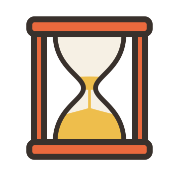

privacy policy
TimeOut: Scroll Less · last updated 29 September 2026
TimeOut ("the app") is made by 7 Technologies Limited ("we", "us"). This policy explains what data the app uses and why. The short version: what you do on your phone stays on your phone. The only data that leaves it is what our ad provider, Google AdMob, needs to show you ads.
1. What stays on your device
To do its job, TimeOut keeps the following only on your device. It is never sent to us or anyone else:
- the apps (and, on iPhone, websites) you choose to limit;
- how much of your free time you've used, when your apps are locked, how many times you've unlocked today, and your streak;
- your answers to the onboarding questions and your plan and bedtime settings.
We don't run servers that receive this data, we don't have accounts, and we can't see any of it.
iPhone: Screen Time
On iPhone, TimeOut uses Apple's Screen Time (Family Controls) framework. Apple gives the app opaque tokens instead of app names, and the usage signals Screen Time provides are handled entirely on your device. Screen Time data is never shared or used for advertising.
Android: Accessibility service
On Android, TimeOut uses an Accessibility service only to know which app is currently open, so it can count your free time on the apps you picked and send you to the home screen when it runs out. It does not read the content of your screen, does not record what you type, and does not collect or share any of this information. It never leaves your device.
2. Ads (Google AdMob)
TimeOut is free because you watch ads to unlock your apps. Ads are provided by Google AdMob. To show and measure ads, Google may collect and process data such as:
- device identifiers, including the advertising ID (Android) or, where you allow it, the IDFA (iPhone);
- your IP address and approximate location derived from it;
- information about ads you see and interact with, and app diagnostics.
Google is an independent controller of this data. See how Google uses information from apps that use its services and Google's privacy policy.
We never give Google (or anyone) your Screen Time or app-usage data. Ads are not targeted using which apps you limit or how you use them.
Your choices
- UK, EEA and Switzerland: the app asks for your consent before ads use your data for personalisation. You can change your choice any time from settings → privacy choices in the app.
- You can reset or delete your advertising ID in your phone's settings, and limit ad personalisation there too.
3. Notifications, alarms and sounds
TimeOut uses notifications and (on iPhone) alarms to show your countdown and tell you when time's up. These are created on your device and contain no personal data.
4. Children
TimeOut is not directed at children under 13, and we do not knowingly collect personal information from them.
5. Keeping and deleting your data
Everything TimeOut stores is on your device. Deleting the app deletes it (yes, including your streak). For data held by Google for ads, use your device's ad settings or Google's controls linked above.
6. Your rights
Depending on where you live (for example under the UK GDPR or EU GDPR), you may have rights to access, correct, delete or object to the processing of your personal data. Because we don't hold personal data about you, most requests will be about data held by Google; we're happy to help point you in the right direction.
7. Changes
If this policy changes, we'll update this page and the date at the top.
8. Contact
7 Technologies Limited · faheem@7technologi.es